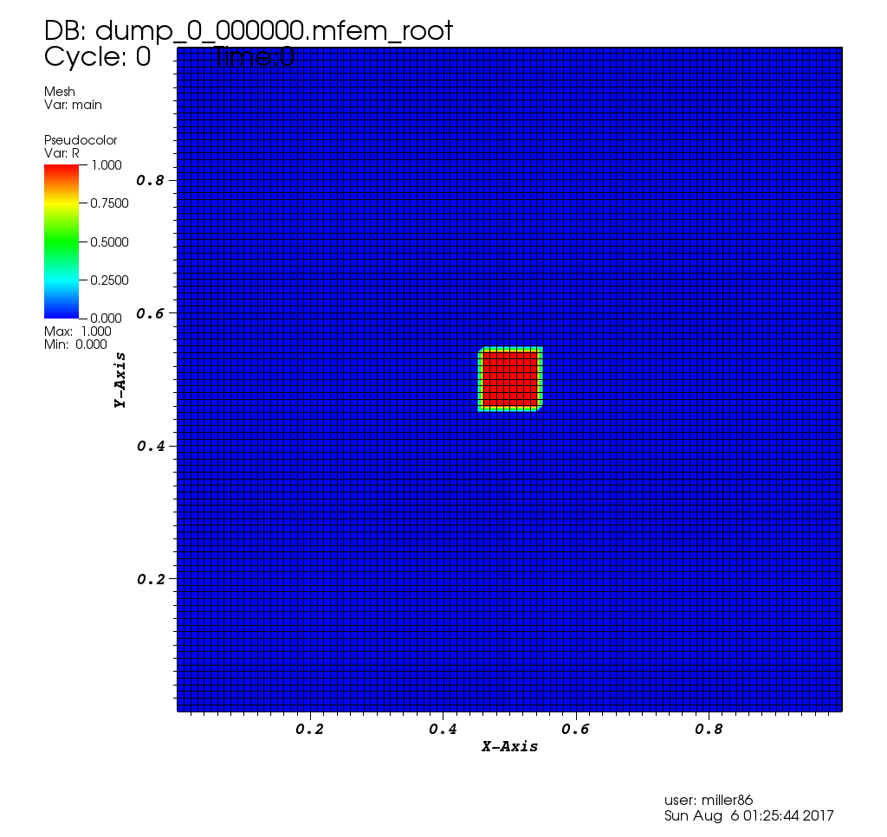
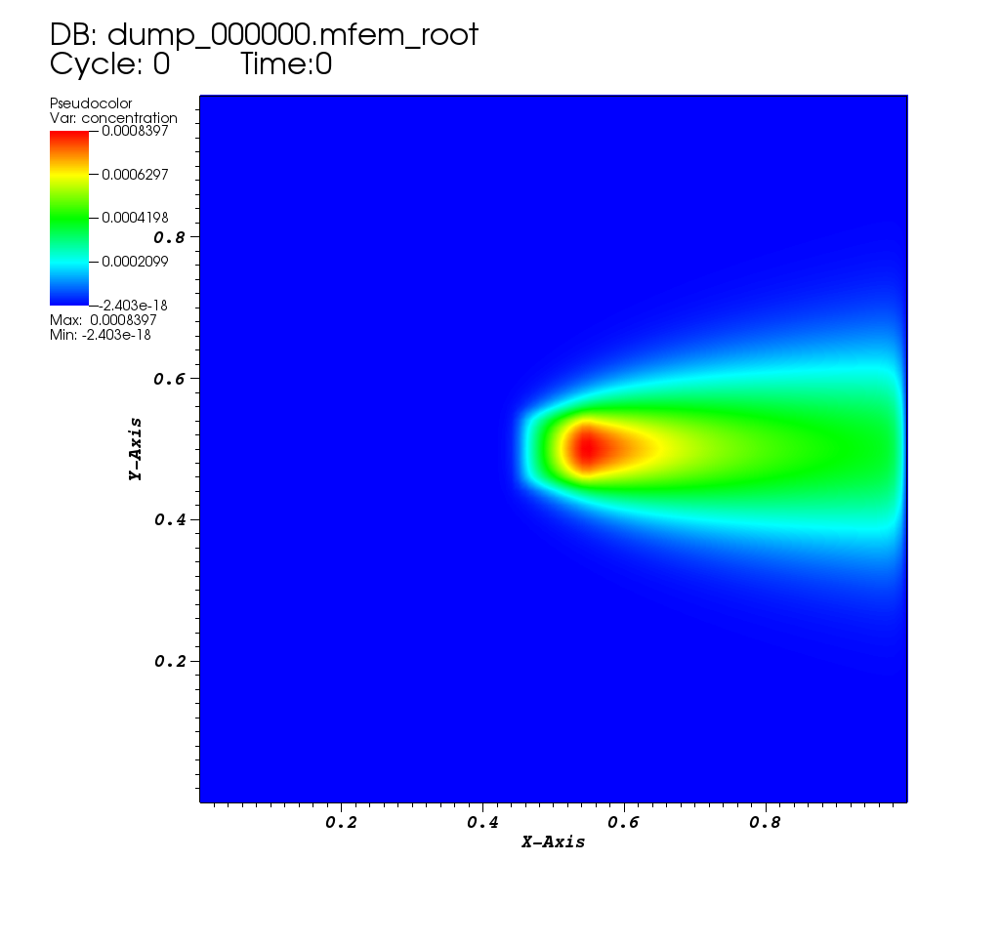
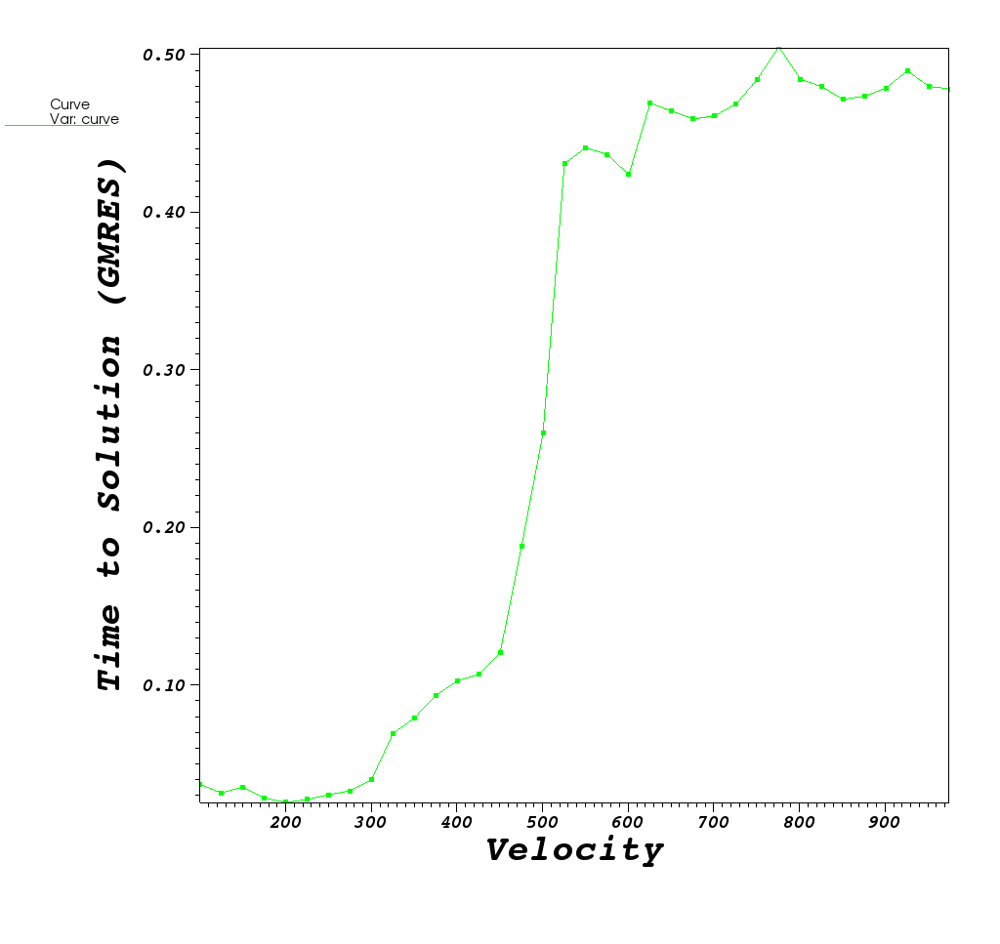
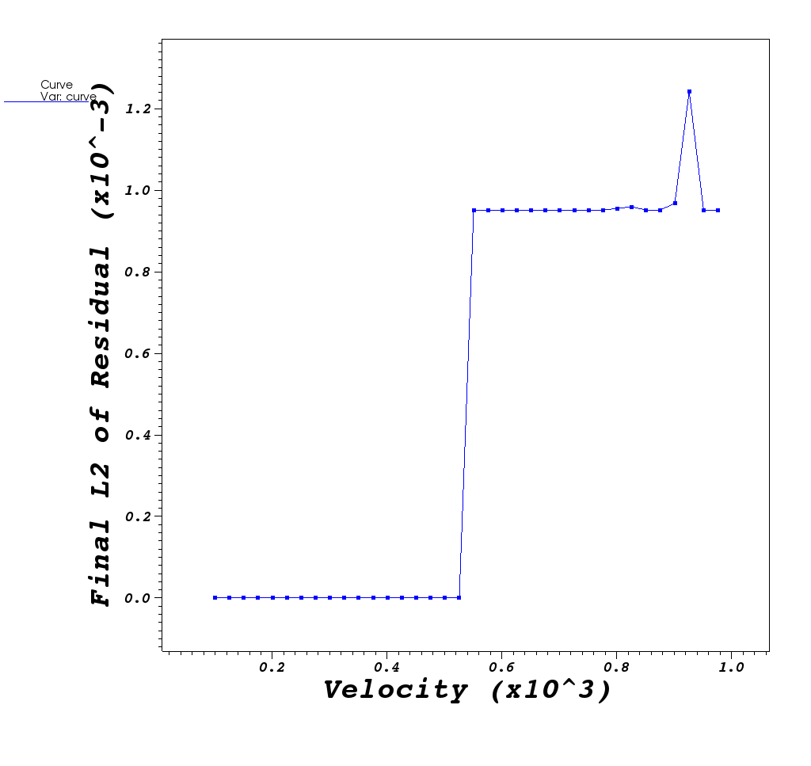

Role and Use of Direct Solvers in Ill-Conditioned Problems
Sparse, Direct Solvers
At A Glance
| Questions | Objectives | Key Points |
| 1. Why use a direct solver? | Understand accuracy | Direct solvers are robust for difficult problems |
| 2. What effects direct solve performance ? | Understand ordering options | Time & space performance can vary a lot. |
To begin this lesson
- Open the Answers Form
- Get into the correct directory
cd HandsOnLessons/superlu_mfemThe problem being solved
The convdiff.c application is modeling the steady state convection-diffusion equation in 2D with a constant velocity. This equation is used to model the concentration of something like a die in a moving fluid as it diffuses and flows through he fluid. The equation is as follows:
Where u is the concentration that we are tracking, , is the diffusion rate, v is the velocity of the flow and R is a concentration source.
In the application we use here, the velocity vector direction is fixed in the +x direction. However, the magnitude is set by the user (default of 100), , is fixed at 1.0, and the source is 0.0 everywhere except for a small square centered at the middle of the domain where it is 1.0.
| Initial Condition |
|---|
|  |
{kind=link}
Solving this PDE is well known to cause convergence problems for iterative solvers, for larger v. We use MFEM as a vehicle to demonstrate the use of a distributed, direct solver, SuperLU_DIST, to solve very ill-conditioned linear systems.
Running the Example
Run 1: default setting with GMRES solver, preconditioned by hypre, velocity = 100
$ ./convdiff | tail -n 3
Time required for first solve: 0.0408995 (s)
Final L2 norm of residual: 2.43686e-16
| Steady State |
|---|
|  |
{kind=link}
Run 2: increase velocity to 1000, GMRES does not converge anymore
$ ./convdiff --velocity 1000 | tail -n 3
Time required for first solve: 0.47337 (s)
Final L2 norm of residual: 0.00095
Between 12 and 13
Below, we plot behavior of the GMRES method for velocity values in the range [100,1000] at increments, dv, of 25 and also show an animation of the solution GMRES gives as velocity increases
| Solutions @dv=25 in [100,1000] | Contours of Solution @ vel=1000 |
|---|---|
 |
| Time to Solution | L2 norm of final residual |
|---|---|
|  |  |
{kind=link}
{kind=link}
GMRES method works ok for low velocity values. As velocity increases, GMRES method eventually crosses a threshold where it can no longer provide a useful result
As instability is approached, more GMRES iterations are required to reach desired norm. So GMRES is still able to manage the solve and achieve a near-zero L2 norm. It just takes more and more iterations. Once GMRES is unable to solve the L2 norm explodes.
Run 3: Now use SuperLU_DIST, with “natural ordering”
$ ./convdiff --velocity 1000 -slu -cp 0
Options used:
--refine 0
--order 1
--velocity 1000
--no-visit
--superlu
--slu-colperm 0
--slu-rowperm 1
--slu-parsymbfact 0
--one-matrix
--one-rhs
Number of unknowns: 10201
Nonzeros in L 1040781
Nonzeros in U 1045632
nonzeros in L+U 2076212
nonzeros in LSUB 1040215
** Memory Usage **********************************
** NUMfact space (MB): (sum-of-all-processes)
L\U : 41.12 | Total : 50.74
** Total highmark (MB):
Sum-of-all : 50.74 | Avg : 50.74 | Max : 50.74
**************************************************
Time required for first solve: 19.0018 (s)
Final L2 norm of residual: 1.62703e-18
**************************************************
**** Time (seconds) ****
EQUIL time 0.00
ROWPERM time 0.01
SYMBFACT time 0.04
DISTRIBUTE time 0.11
FACTOR time 18.52
Factor flops 1.958603e+08 Mflops 10.58
SOLVE time 0.10
Solve flops 5.167045e+06 Mflops 52.21
REFINEMENT time 0.20 Steps 2
**************************************************
| Stead State For vel=1000 |
|---|
 |
Run 4: Now use SuperLU_DIST, with MMD(A’+A) ordering.
$ ./convdiff --velocity 1000 -slu -cp 2
Options used:
--refine 0
--order 1
--velocity 1000
--no-visit
--superlu
--slu-colperm 2
--slu-rowperm 1
--slu-parsymbfact 0
--one-matrix
--one-rhs
Number of unknowns: 10201
Nonzeros in L 594238
Nonzeros in U 580425
nonzeros in L+U 1164462
nonzeros in LSUB 203857
** Memory Usage **********************************
** NUMfact space (MB): (sum-of-all-processes)
L\U : 10.07 | Total : 15.52
** Total highmark (MB):
Sum-of-all : 15.52 | Avg : 15.52 | Max : 15.52
**************************************************
Time required for first solve: 0.111105 (s)
Final L2 norm of residual: 1.53726e-18
**************************************************
**** Time (seconds) ****
EQUIL time 0.00
ROWPERM time 0.01
COLPERM time 0.04
SYMBFACT time 0.01
DISTRIBUTE time 0.02
FACTOR time 0.05
Factor flops 1.063303e+08 Mflops 2045.75
SOLVE time 0.00
Solve flops 2.367059e+06 Mflops 779.35
REFINEMENT time 0.01 Steps 2
**************************************************
NOTE: the number of nonzeros in L+U is much smaller than natural ordering. This affects the memory usage and runtime.
Run 5: Now use SuperLU_DIST, with Metis(A’+A) ordering.
$ ./convdiff --velocity 1000 -slu -cp 4
Options used:
--refine 0
--order 1
--velocity 1000
--no-visit
--superlu
--slu-colperm 4
--slu-rowperm 1
--slu-parsymbfact 0
--one-matrix
--one-rhs
Number of unknowns: 10201
Nonzeros in L 522306
Nonzeros in U 527748
nonzeros in L+U 1039853
nonzeros in LSUB 218211
** Memory Usage **********************************
** NUMfact space (MB): (sum-of-all-processes)
L\U : 9.24 | Total : 14.96
** Total highmark (MB):
Sum-of-all : 14.96 | Avg : 14.96 | Max : 14.96
**************************************************
Time required for first solve: 0.152424 (s)
Final L2 norm of residual: 1.51089e-18
**************************************************
**** Time (seconds) ****
EQUIL time 0.00
ROWPERM time 0.01
COLPERM time 0.05
SYMBFACT time 0.01
DISTRIBUTE time 0.02
FACTOR time 0.05
Factor flops 7.827314e+07 Mflops 1717.18
SOLVE time 0.00
Solve flops 2.120276e+06 Mflops 606.75
REFINEMENT time 0.01 Steps 2
**************************************************
| Solutions @dv=25 in [100,1000] | Steady State Solution @ vel=1000 |
|---|---|
|
Run 5.5: Now use SuperLU_DIST, with Metis(A’+A) ordering, using 1 MPI tasks, on a larger problem.
By adding --refine 3, each element in the mesh is subdivided twice yielding a 64x larger problem.
But, we’ll run it on only one processor.
$ mpiexec -n 1 ./convdiff --refine 3 --velocity 1000 -slu -cp 4
Options used:
--refine 3
--order 1
--velocity 1000
--no-visit
--superlu
--slu-colperm 4
--slu-rowperm 1
--slu-parsymbfact 0
--one-matrix
--one-rhs
Number of unknowns: 641601
Nonzeros in L 40412796
Nonzeros in U 40412796
nonzeros in L+U 80183991
nonzeros in LSUB 15748820
** Memory Usage **********************************
** NUMfact space (MB): (sum-of-all-processes)
L\U : 701.82 | Total : 758.92
** Total highmark (MB):
Sum-of-all : 786.78 | Avg : 786.78 | Max : 786.78
**************************************************
Time required for first solve: 18.8951 (s)
Final L2 norm of residual: 5.99013e-18
**************************************************
**** Time (seconds) ****
EQUIL time 0.03
ROWPERM time 0.29
COLPERM time 4.83
SYMBFACT time 0.32
DISTRIBUTE time 1.58
FACTOR time 9.87
Factor flops 2.326266e+10 Mflops 2357.24
SOLVE time 0.41
Solve flops 1.604473e+08 Mflops 395.95
REFINEMENT time 0.90 Steps 2
**************************************************
Run 6: Now use SuperLU_DIST, with Metis(A’+A) ordering, using 16 MPI tasks, on a larger problem.
Here, we’ll re-run the above except on 16 tasks and just grep the output form some key values of interest.
$ ${MPIEXEC_OMPI} -n 16 ./convdiff --refine 3 --velocity 1000 -slu --slu-colperm 4 >& run6.out
Options used:
--refine 3
--order 1
--velocity 1000
--no-visit
--superlu
--slu-colperm 4
--slu-rowperm 1
--slu-parsymbfact 0
--one-matrix
--one-rhs
Number of unknowns: 641601
Nonzeros in L 40340620
Nonzeros in U 40340620
nonzeros in L+U 80039639
nonzeros in LSUB 15901421
** Memory Usage **********************************
** NUMfact space (MB): (sum-of-all-processes)
L\U : 705.31 | Total : 974.93
** Total highmark (MB):
Sum-of-all : 2888.58 | Avg : 180.54 | Max : 180.54
**************************************************
Time required for first solve: 9.10544 (s)
Final L2 norm of residual: 2.29801e-39
**************************************************
**** Time (seconds) ****
EQUIL time 0.03
ROWPERM time 0.36
COLPERM time 5.57
SYMBFACT time 0.37
DISTRIBUTE time 0.30
FACTOR time 1.62
Factor flops 2.301228e+10 Mflops 14226.55
SOLVE time 0.14
Solve flops 1.623936e+08 Mflops 1148.60
REFINEMENT time 0.30 Steps 2
We have increased the mesh size by 8x here. The matrix dimension goes up as the SQUARE of the mesh size and this accounts for 64x factor of DOFs. We have also added 16x processors. The parallel runtime is 9.10544 seconds.
Run 7: Now use SuperLU_DIST, solve the systems with same A, but different right-hand side b.
Here, we solve a different linear system but with the same coefficient matrix A. We tell SuperLU to re-use the exisiting LU factors, but only give a different right-hand side. Notice the improvement in solve time when re-using the factors.
$ mpiexec -n 16 ./convdiff --refine 3 --velocity 1000 -slu -cp 4 -2rhs
Options used:
--refine 3
--order 1
--velocity 1000
--no-visit
--superlu
--slu-colperm 4
--slu-rowperm 1
--slu-parsymbfact 0
--one-matrix
--two-rhs
Number of unknowns: 641601
Nonzeros in L 40340620
Nonzeros in U 40340620
nonzeros in L+U 80039639
nonzeros in LSUB 15901421
** Memory Usage **********************************
** NUMfact space (MB): (sum-of-all-processes)
L\U : 705.31 | Total : 974.93
** Total highmark (MB):
Sum-of-all : 2888.58 | Avg : 180.54 | Max : 180.54
**************************************************
Time required for first solve: 9.11672 (s)
Final L2 norm of residual: 2.14235e-39
**************************************************
**** Time (seconds) ****
EQUIL time 0.04
ROWPERM time 0.36
COLPERM time 5.64
SYMBFACT time 0.38
DISTRIBUTE time 0.23
FACTOR time 1.61
Factor flops 2.301228e+10 Mflops 14307.11
SOLVE time 0.14
Solve flops 1.623936e+08 Mflops 1147.81
REFINEMENT time 0.30 Steps 2
**************************************************
Time required for second solve (new rhs): 0.46439 (s)
Final L2 norm of residual: 1.95236e-39
SOLVE time 0.14
Solve flops 1.623936e+08 Mflops 1202.77
REFINEMENT time 0.29 Steps 2
**************************************************
Out-Brief
In this lesson, we have used MFEM as a vehicle to demonstrate the value of direct solvers from the SuperLU_DIST numerical package.
Further Reading
To learn more about sparse direct solver, see Gene Golub SIAM Summer School course materials: Lecture Notes, Book Chapter, and Video